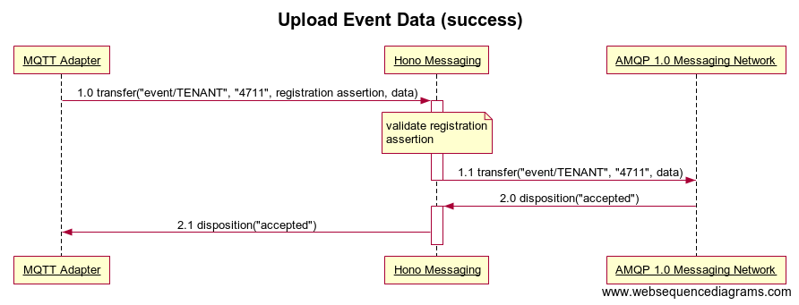
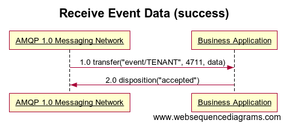

Event API
The Event API is used by Devices to send event messages downstream. Business Applications and other consumers use the API to receive messages published by devices belonging to a particular tenant.
The Event API is defined by means of AMQP 1.0 message exchanges, i.e. a client needs to connect to Hono using AMQP 1.0 in order to invoke operations of the API as described in the following sections. Throughout the remainder of this page we will simply use AMQP when referring to AMQP 1.0.
The Event API is identical to the Telemetry API regarding the provided operations and the message flow.
Events provide a different quality of service for messages sent to the Event endpoint by
setting the durable property of the message header to true.
There are well-known events that are distinguished by their content-type which are defined here.
Southbound Operations
The following operations can be used by Devices and/or Protocol Adapters (to which the devices are connected) to publish event messages for consumption by downstream consumers like Business Applications.
Both Devices as well as Protocol Adapters will be referred to as clients in the remainder of this section.
Upload Event Data
Preconditions
- Client has established an AMQP connection with Hono’s Event endpoint.
- Client has established an AMQP link in role sender with Hono using target address
event/${tenant_id}where${tenant_id}is the ID of the tenant that the client wants to upload event messages for. - The device for which the client wants to send an event has been registered (see Device Registration API).
- Client has obtained a registration assertion for the device from the Device Registration service by means of the assert Device Registration operation.
Hono supports AT LEAST ONCE delivery of Event messages only. A client therefore MUST use unsettled for the snd-settle-mode and first for the rcv-settle-mode fields of its attach frame during link establishment. All other combinations are not supported by Hono and result in the termination of the link.
Message Flow
The following sequence diagram illustrates the flow of messages involved in the MQTT Adapter uploading an event data message to Hono Messaging’s Event endpoint.

- MQTT Adapter sends event data for device
4711.- Hono Messaging successfully verifies that device
4711ofTENANTexists and is enabled by means of validating the registration assertion included in the message (see Device Registration) and forwards data to AMQP 1.0 Messaging Network.
- Hono Messaging successfully verifies that device
- AMQP 1.0 Messaging Network acknowledges reception of the message.
- Hono Messaging acknowledges reception of the message. In contrast to telemetry data, the protocol adapter awaits the disposition from the AMQP 1.0 Messaging Network before signaling to the device that it has accepted the message for processing.
- Hono Messaging acknowledges reception of the message. In contrast to telemetry data, the protocol adapter awaits the disposition from the AMQP 1.0 Messaging Network before signaling to the device that it has accepted the message for processing.
Message Format
See Telemetry API for definition of message format.
Note that Hono does not return any application layer message back to the client in order to signal the outcome of the operation. Instead, Hono signals reception of the message by means of the AMQP ACCEPTED outcome if the message complies with the formal requirements and the downstream AMQP 1.0 messaging network has also accepted the event. Note that it depends on the configuration of the messaging network what accepted actually means. By default, event messages are marked as durable and the messaging network will thus at least have persisted the event successfully when it signals the ACCEPTED outcome to Hono.
Whenever a client sends an event that cannot be processed because it does not conform to the message format defined above, Hono settles the message transfer using the AMQP REJECTED outcome containing an amqp:decode-error. Clients should not try to re-send such rejected messages unaltered.
If the event passes formal verification, the outcome signaled to the client is the one received from the downstream AMQP 1.0 messaging network. In this case, clients may try to re-send messages for which a delivery state other than ACCEPTED has been returned.
Northbound Operations
Receive Event Data
Hono delivers messages containing event messages reported by a particular device in the same order that they have been received in (using the Events operation defined above). Hono supports multiple non-competing Business Application consumers of event messages for a given tenant. Hono allows each Business Application to have multiple competing consumers for event messages for a given tenant to share the load of processing the messages.
Preconditions
- Client has established an AMQP connection with Hono.
- Client has established an AMQP link in role receiver with Hono using source address
event/${tenant_id}where${tenant_id}represents the ID of the tenant the client wants to retrieve event messages for.
Hono supports AT LEAST ONCE delivery of Event messages only. A client therefore MUST use unsettled for the snd-settle-mode and first for the rcv-settle-mode fields of its attach frame during link establishment. All other combinations are not supported by Hono and result in the termination of the link.
Message Flow
The following sequence diagram illustrates the flow of messages involved in a Business Application receiving an event data message from Hono.

- AMQP 1.0 Messaging Network delivers event message to Business Application.
- Business Application acknowledges reception of message.
Message Format
See Telemetry API for definition of message format.
Well-known event message types
Hono defines well-known events that are of a specific content-type. In the following these events are specified in detail.
Empty notification
An event of this type does not have any payload so the body of the event MUST be empty (different from other messages sent downstream). It only carries AMQP 1.0 properties.
The AMQP 1.0 properties an event sender needs to set for an empty notification event are defined in the Telemetry API.
The relevant properties are listed again in the following table:
| Name | Mandatory | Location | Type | Description |
|---|---|---|---|---|
| content-type | yes | properties | symbol | Must be set to application/vnd.eclipse-hono-empty-notification |
| ttd | no | application-properties | int | ‘time till disconnect’ : see Telemetry API. |
NB: An empty notification can be used to indicate to a Business Application that a device is currently ready to receive an upstream message by setting the ttd property. The application receiving the notification can verify if the notification is not expired and then may decide to send an upstream message to the device.
Connection Events
The internal connect/disconnect events may be translated into Hono Events with a well known message format and type. As such they are injected into the normal event message stream.
Authenticated devices only
As the Event API requires a tenant in order to allow sending events, an authenticated device is required. Internal events for unauthenticated devices will be dropped by this implementation and not be delivered via the Event API.
The following table provides an overview of the message structure:
| Name | Mandatory | Location | Type | Description |
|---|---|---|---|---|
| content-type | yes | properties | symbol | Must be set to application/vnd.eclipse-hono-dc-notification+json |
| device_id | yes | application-properties | string | The ID of the authenticated device |
The payload is a JSON object with the following fields:
| Name | Mandatory | Type | Description |
|---|---|---|---|
| cause | yes | string | The cause of the connection event. Must be either connected or disconnected. |
| remote-id | yes | string | The ID of the remote endpoint which connected (e.g. a remote address, port, client id, …). This is specific to the protocol adapter. |
| source | yes | string | The name of the protocol adapter. e.g. hono-mqtt. |
| data | no | object | An arbitrary JSON object which may contain additional information from the protocol adapter. |
Below is an example for a connection event:
{
"cause": "connect",
"remote-id": "mqtt-client-id-1",
"source": "hono-mqtt",
"data": {
"foo": "bar"
}
}